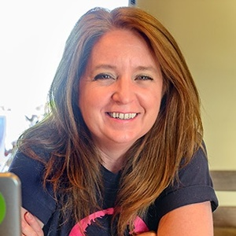
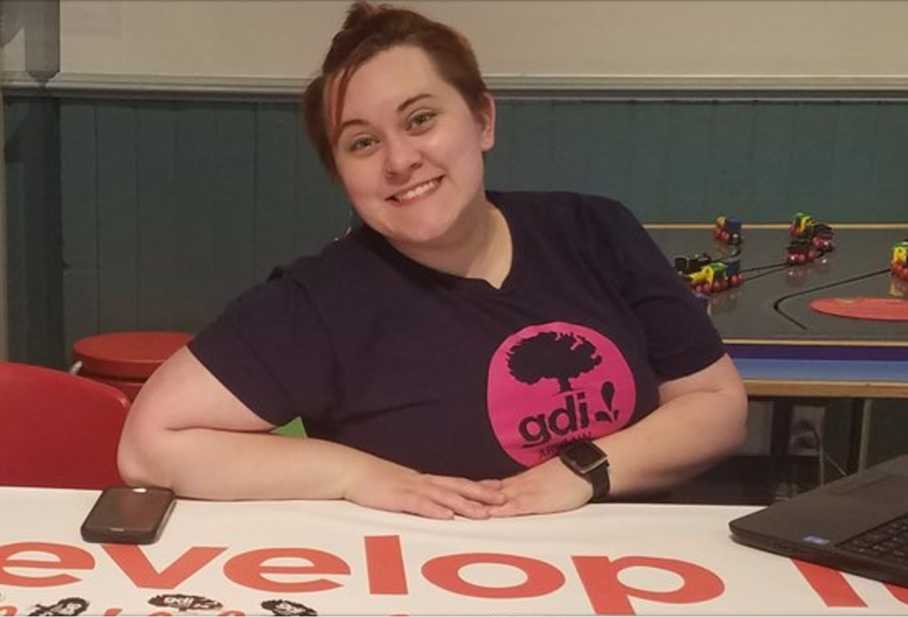

<md-card>
<div>
  <aside class="ronda-about">
    <p>Based in Ann Arbor, Michigan, Ronda Bergman, the founder and lead consultant at EllaVatec has over twenty years of experience
      in technology.
    </p>
    <p>
      Often finding herself as a the only female developer at her workplace she
      is now seeking to solve this discrepancy by using her personal experience
      to help companies create a more inclusive and diverse workforce.
    </p>
  </aside>
  <aside class="ronda-photo">
    
  </aside>
</div>


<div style="padding-top: 15em;">
  <aside class="erin-about">
    <p>Also from Ann Arbor, Michigan, Erin Bergman, the co-founder and lead cat-header
        at EllaVatec has taught programming and worked as a developer for over a year
    </p>
    <p>
      Growing up the daughter of a female software developer, diversity in tech
      was not an uncommon topic in her life. Since becoming a developer herself
      she is seeking to increase the accessibility of careers in technology
      to the unrepresented.
    </p>
  </aside>
  <aside class="erin-photo">
    
  </aside>
</div>
</md-card>
